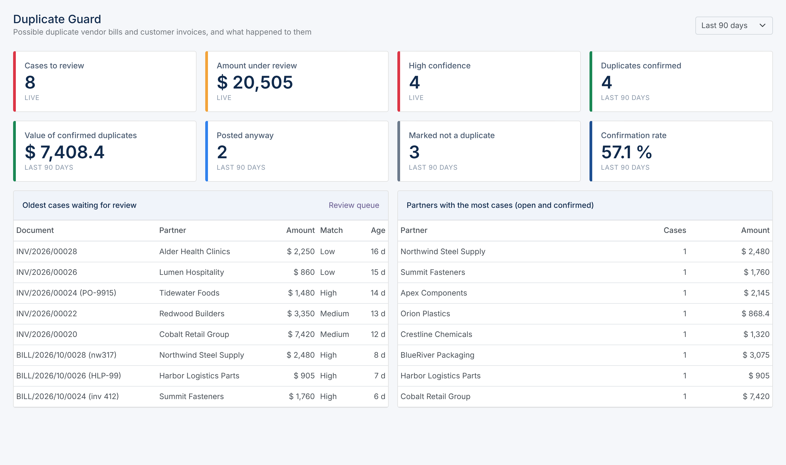
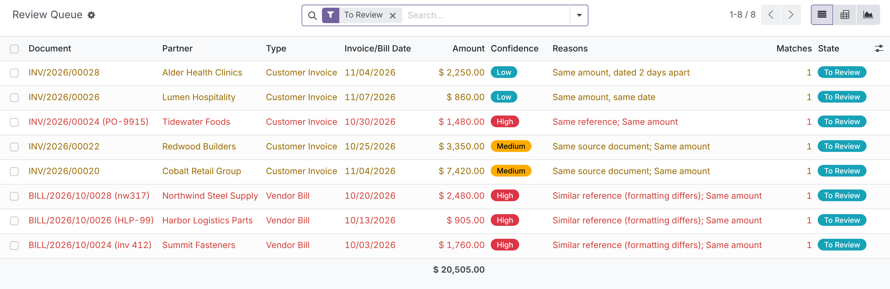
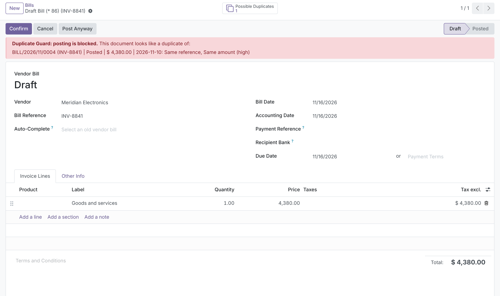
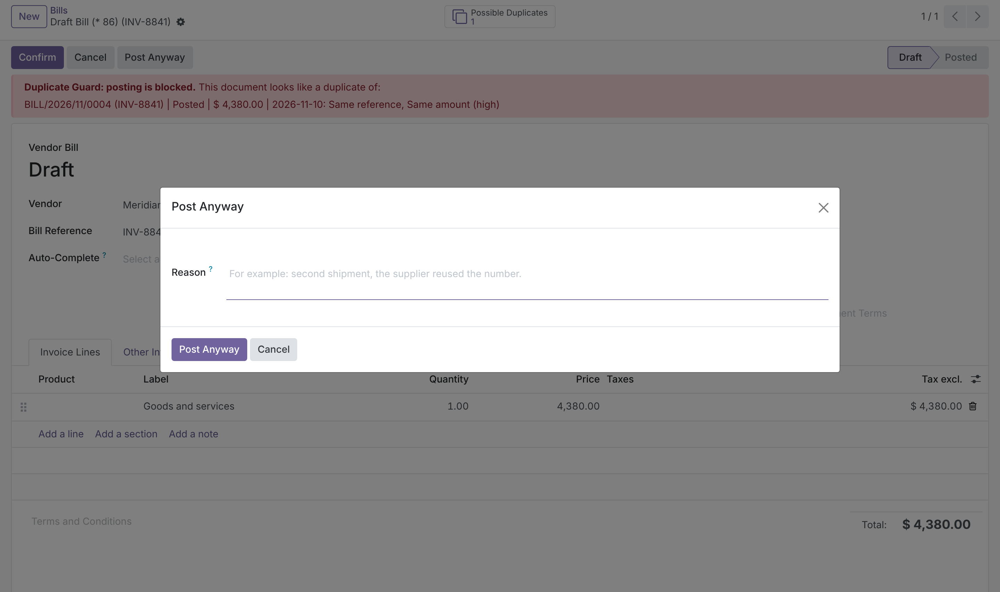
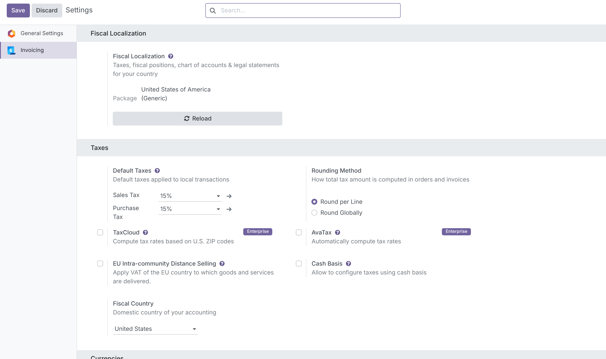

AXSync | Odoo 17.0 | Accounting
Detect duplicates by partner, reference, amount and source document, warn or block at posting, and keep every decision in a review queue with a dashboard.
Value in one line: it checks each bill and invoice against what is already in your books, explains why it looks like a duplicate, and makes someone decide before money moves.
Odoo 17.0 Invoicing No extra Python libraries

The Duplicate Guard dashboard on Odoo 17.0, shown with demo data for fictional companies.
Duplicate documents are usually small mistakes with expensive results. They are hard to see because every document looks valid on its own.
A supplier resends an invoice, someone re-enters it, and the second payment goes out before anyone notices.
INV-0001, inv 1 and INV/001 look different to a strict match but are the same document.
A sales order or delivery gets invoiced again, and the customer calls.
A banner on the form does not stop a posting and leaves no record of what was decided.
Suspected duplicates are found by chance and rarely tracked to a conclusion.
Finding duplicates after the fact means filters, exports and spreadsheets.
The module checks a document when it is posted and again in a daily scan. Each possible duplicate becomes a case with a confidence level and the reasons behind it, so a person can confirm it or clear it.
| Problem | How the module addresses it |
|---|---|
| Duplicate payments | Optional block at posting, from the confidence level you choose. |
| Different reference formats | References are normalised before they are compared. |
| Customer invoices | The same checks apply to customer invoices and credit notes. |
| Ignored warnings | Blocked documents need Post Anyway with a written reason, restricted to accounting managers. |
| No follow-up | A review queue with dismiss and confirm actions and a full history. |
| Clean-up of old data | Scan any date range, or let the daily scan do it. |
Standard Odoo already shows a warning for some duplicates. This module goes further: it can stop the posting, matches more patterns, records the decision and reports on it.
Documents are compared by commercial partner, reference, amount in the same currency, source document and date. Reference matching ignores case, spaces, symbols and leading zeros. Each match carries a confidence level (high, medium or low) and the reasons in plain words.
Choose Warn only or Block posting, and the confidence from which to block. When several documents are posted at once and one is blocked, none is posted, with a message that lists the documents involved.
Accounting managers can override a block. A reason is required and is stored on the case and in the chatter of the document.
Open cases with the document, partner, amount, confidence, reasons and number of matches. Mark a case as Not a Duplicate or Confirm Duplicate, add a note, reopen it later. The history shows who decided and when.
Cases to review, amount under review, high confidence cases, confirmed duplicates and their value, documents posted anyway, cases cleared and the confirmation rate, plus the oldest open cases and the partners with the most cases.
A scheduled action reviews recent documents every day, and a wizard scans any date range. Scans can be repeated safely: the same case is never created twice, and cases whose document was cancelled are closed.
A red or yellow alert on the bill or invoice lists the matching documents and why. A Possible Duplicates button opens them.
Switch vendor and customer checks, each match rule, the reference and amount windows, comparison with drafts, the daily scan and its look-back, independently for every company.
List, pivot and graph views with filters and group-by on confidence, partner, type and status. Use the standard Export action or Download xlsx in the pivot.
All screenshots come from the module running on Odoo 17.0 with demo data for fictional companies.




The second copy is caught before it is posted, not after it is paid.
Every match says why it was flagged, so a decision takes seconds.
Who cleared, confirmed or overrode a case, and the reason they gave.
Only accounting managers can post a blocked document, and only with a reason.
Starts in warn mode. Move to block mode when you trust the results.
Works inside standard bills and invoices. No change to how people enter documents.
| Odoo version | 17.0 only |
|---|---|
| Required Odoo apps | Invoicing (account). |
| Python libraries | None beyond Odoo itself. |
| Multi-company | Supported through record rules. Covered by an automated test. |
| Data and services | No external services. The module stores its cases and settings in your database. |
| Standard Odoo files | Not modified. The module extends bills and invoices through standard inheritance. |
No. The default mode is warn. Documents are posted as usual and possible duplicates are added to the review queue. Switch to block mode in the settings when you are ready.
Odoo shows a warning for some duplicates. This module also matches formatted references, amounts and source documents, can block posting, requires a reason to override, keeps a review queue and reports on it.
Yes. Vendor bills and customer invoices, including credit notes, can each be switched on or off.
Mark the case as Not a Duplicate, or use Post Anyway with a reason if posting was blocked.
Users in the accounting manager group. A reason is mandatory.
Yes. Use Scan for Duplicates for a date range. Scanning again never creates the same case twice.
Yes. Settings and cases are per company and respect the user's allowed companies.
Yes. Use the standard Export action on the list or Download xlsx in the pivot.
Email hunain@axsync.com or use the Contact the Author option on this Odoo Apps Store page.
Published by AXSync
Website: www.axsync.com
Support email: hunain@axsync.com
Please include your Odoo version, the module version, and what you expected to see. Screenshots help.
This module is published by AXSync and is not an official Odoo product. Odoo is a trademark of Odoo S.A.
Install AXSync Duplicate Invoice Guard and keep duplicate bills and invoices out of your books.
www.axsync.com